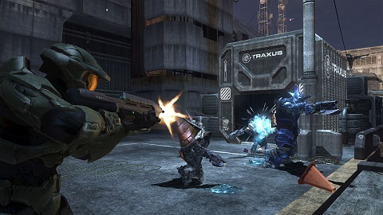

Consume Gamestation
November 8th, 2020
Back when I was on twitter, I kept getting these shill tweets for the PS5 constantly. I have no idea why, since I don’t follow any gaming news or accounts, yet this still happened. Then, while looking through the Donor News sites I stumbled upon them shilling for New Gamestation, specifically the Playstation 5. I read through this with mostly amusement, until I got to this part.
Guardian:
TDC_ARTICLE_START
Subscribe to PlayStation Plus for £50 a year, and, as well as online multiplayer and monthly free games, you get access to 20 of PlayStation 4’s classic games, from God of War to Persona 5, all benefiting from faster loading and graphics upgrades. These games looked so good on a PS4 Pro that I couldn’t observe much of a difference, but at least I didn’t have to listen to the jet-engine noise of the PS4’s fans while I played. For another £50 a year you can subscribe to PlayStation Now, which lets you stream or download from a changing library of PS4 and PS3 games. If you’ve spent the seven years since the PS4 debut building up a collection of its games, you’ll be pleased to know that 99% of them are compatible with PlayStation 5. (Sony has published a list of exceptions.) Some PS1 and PS2 games from the 90s and 00s can be bought through the PlayStation store.
TDC_ARTICLE_STOP
Sometimes, even if we understand that we’re reading propaganda, we can get caught up in the larger trap, the idea that this is even worth talking about in the first place. For political propaganda, a great example is the death of George Floyd in the US, a man who had at one point pointed a loaded shotgun at a pregnant womans stomach when robbing her house looking for drugs and money. He killed himself in police custody by ingesting his own stash of fentanyl. The idea that there is any discussion to be had is itself propaganda, with no relationship to reality.
The same is true for run of the mill corporate shilling. Here we see the Playstation 5, a totally unnecessary piece of computer hardware, that can qualitatively do precisely nothing of importance that the previous generation of consoles couldn’t. And even the previous generation was itself unnecessary.
But rather than take that at face value, let’s take a brief trip backwards through time, to the mid 90’s.
That hair...
Back in the mid 90's, we finally had just barely enough hardware power to render primitive 3D worlds at human tolerable refresh rates. I would go so far as to say that the very first computer generated 3D worlds, whether in offline renderers or real time were civilizational achievements comparable to the moon landing. Maybe not as great, but these were truly outstanding achievements, and you don't need to care about video games specifically to understand the achievement. You actually should be proud that we produced such things as 3D virtual worlds.
There was no guarantee that there would be any math allowing us to simulate 3D worlds, and no guarantee that computers would ever get fast enough to actually render them in real time, let alone something detailed enough that you can actually tell what you're looking at. There was also no guarantee that we would be able to make the 3D models required for 3D rendering at all, let alone with software good enough to make this financially practical.
I have no idea what I'm looking at, but it was great back in the day.
On the hardware side, the original N64 had a "reality co-processor" that we would think of as a GPU which could churn out just over 100 MFLOPS. That's 100 million floating point operations per second. That was just barely enough to render an Italian plumber with no fingers.
This is what 100 MFLOPS gets you. This, at 30 frames per second, most of the time. Do you know what 10 MFLOPS gets you?
That's right it gets you absolutely fuck all. Or it gets Mario at 3 frames per second. You just couldn't render what you wanted with much less than the hardware of the N64, or the equivalent for the early 3D accelerators in PC's. In fact, to be perfectly honest, there were a lot of things that this amount of hardware just can't do, and I don't mean that in the bug man "oh my god the perspective cubic bump mapping algorithm cannot be blah blah", I mean that artists were horribly constrained in the actual worlds that they could build, in the same way that Michelangelo would be constrained by a box of crayons, or only being allowed to paint with paint rollers.
Although great artists could still be evocative
Truth be told, that amount of hardware might have been not enough. Many people my age have very fond memories of those games. What the rose-tinted glasses hide from you is that the framerate on those games was at many times beneath unplayable. I am not exaggerating when I say that this was just barely the hardware required to do very constrained real time 3D rendering.
And the resolution was 320x240
The next generation of consoles, which came out around 2000-2001, had 7.3 GFLOPS (PS2), 9.4 GFLOPS (GC), and 20 GFLOPS (XBOX) of graphical performance. For those who can't math, that's 73x more, 94x more, and 200x more hardware performance in just 5 years, which would be enough to render SM64 at a nice ~3,000 frames per second, or alternatively, give us this:
Or this...
And I'm not even trying to make some snarky comment about how "now Mario has fingers, wow," because the combination of ~10x increased single threaded perf back then from the 100 MHz Pentiums the originals were using to the 1+GHz P3's or equivalents the next gen used and the massive graphical perf increase quite legitimately allowed people to create what they couldn't before. It's nice to have an artist not need to autistically worry about polygons and be able to create what they actually want, nor obsess with the numbers of entities on screen at one time or in memory. It also allowed a team that didn't have John fucking Carmack to create a 3D engine that wasn't created by a 200+IQ superhuman, yet still had enough performance. And we could go from pretty much not having shadows on the N64, ignoring some crude exceptions, to having shadows now.
Again, I am not trying to be snarky. The difference between not having real time 3D computer graphics and having it is miles more important than this, but it is totally fine to be genuinely appreciative of the hardware required to create these games, or even just allow someone to move through these 3D worlds. This is the equivalent of taking Michelangelos paint rollers away and giving him a nice starter paint set with real brushes. It’s arguable that you should be even more excited this time around, since this is effectively the real deal.
After all, this generation can be thought of as 3D being done the way it should have been from the start. Rock solid 30 frames per second, 640x480 resolution, and models detailed enough that you didn’t have to look at them for 10 seconds going “WTF is that?”. Constraints lifted to the point of the artist being limited by his imagination.
The next generation, looking at the XBox 360, gives us about 240 GFLOPS, approximately 25x more power than the previous generation, as well as a faster triple core CPU. And that got you effectively the final form of what 3D should be. High resolutions, detailed character models, and completely real time lighting and shadowing, should the developers choose to do that.

Modern day NVIDIA graphics hardware is pushing 20 TFLOPS now, which is about 2,000x more powerful than the GC, and about 200,000x more powerful than the N64. We've got the power, we've had it for a while now. Artists can do whatever the fuck they want and what they want to do is render loot boxes with higher fidelity so that underage children get hooked and can beg their parents to buy worthless shit for them. That's what they want to do. This:
 And I honestly cannot even fathom why anyone would be excited about new computer hardware even if the industry wasn't run by parasitical capitalists exploiting the customer base to enrich themselves. The purpose of all these new games is to transfer money from your bank account to their bank account, but even if they were trying to really create meaningful experiences, literally nobody would care about an increase in "muh FLOPS". Take a minute and watch these bug creatures trying to get you excited about new product.
https://www.youtube.com/watch?v=KVnBikbYGic&t=2423s
You don't need to actually watch that, the gist of it is "Oh my fucking god, you can do real time raytracing on these new consoles kind of, if you're willing to render at 30 FPS in THE FUCKING YEAR 2020 HOLY SHIT ARE YOU FUCKING KIDDING ME". That last part was actually added by me, because it's an absurdity bordering on satire that a company would release a game that runs at 30 frames per second with the hardware capable of running Super Mario 64 at quite literally 6 million frames per second. The only possible reason being that they want the game to look better in screenshots, to sell more.
And the actual tech they're talking about, raytracing, is a hilarious nothing burger. It exists to soak up the increase in graphical horsepower. The differences between games with raytracing in parts, and games without (or the same game with a different rendering path) is so subtle that the differences need to be pointed out to people, then they need to be given time to look back and forth to see the tiny almost imperceptible differences between the two. And yet the bug people in the above video are REALLY FUCKING EXCITED ABOUT THIS.
And I honestly cannot even fathom why anyone would be excited about new computer hardware even if the industry wasn't run by parasitical capitalists exploiting the customer base to enrich themselves. The purpose of all these new games is to transfer money from your bank account to their bank account, but even if they were trying to really create meaningful experiences, literally nobody would care about an increase in "muh FLOPS". Take a minute and watch these bug creatures trying to get you excited about new product.
https://www.youtube.com/watch?v=KVnBikbYGic&t=2423s
You don't need to actually watch that, the gist of it is "Oh my fucking god, you can do real time raytracing on these new consoles kind of, if you're willing to render at 30 FPS in THE FUCKING YEAR 2020 HOLY SHIT ARE YOU FUCKING KIDDING ME". That last part was actually added by me, because it's an absurdity bordering on satire that a company would release a game that runs at 30 frames per second with the hardware capable of running Super Mario 64 at quite literally 6 million frames per second. The only possible reason being that they want the game to look better in screenshots, to sell more.
And the actual tech they're talking about, raytracing, is a hilarious nothing burger. It exists to soak up the increase in graphical horsepower. The differences between games with raytracing in parts, and games without (or the same game with a different rendering path) is so subtle that the differences need to be pointed out to people, then they need to be given time to look back and forth to see the tiny almost imperceptible differences between the two. And yet the bug people in the above video are REALLY FUCKING EXCITED ABOUT THIS.
1996 gave us 3D worlds. 2020 gives us this...
It's just so absurd, because if they just used the algorithms from ~2004 and scaled up the assets they'd be running games at +1000 FPS, with no need to optimize anyway. This technology exists so that NVIDIA and AMD can justify their existence because they've already produced the hardware required to actually do real time rendering, and now need a reason to perpetuate themselves. In the same way that Intel would try to pretend you need their latest CPU to do real-time spellchecking in a word processor, if they thought they could get away with that.
And this is what I mean by taking a step back and giving your head a shake. Can you imagine someone back in 1996 not being able to see the difference between Mario 64, and the Super Mario games on the SNES. It’s like, one of them is in 3D. The idea that they would have had to put one image side by side and really explain to you what the difference between them is laughable.
Nah, I can't quite see it, maybe a different camera angle?
And we can see the degeneration or sort of de-evolution of these nerds. 1996 gave us 3D worlds. 2001 gave us the 3D worlds that artists really wanted to make. 2006 gave us the polished version of the same but higher resolution and fidelity. 2013 gave us ? but I guess there's more memory or something. 2020 gave us nothing of consequence unless you're a bug creature.
It's got raytracing!?
25 years ago, if you weren’t excited for new gamestation, there was something wrong with your brain, even if you didn’t play video games. Now, in the year 2020, if you are excited about new gamestation, there’s something wrong with your brain, even if you do play video games.
Go outside. Play a sport. Go meet people. Do literally anything with your life other than getting excited about new product.
And I honestly cannot even fathom why anyone would be excited about new computer hardware even if the industry wasn't run by parasitical capitalists exploiting the customer base to enrich themselves. The purpose of all these new games is to transfer money from your bank account to their bank account, but even if they were trying to really create meaningful experiences, literally nobody would care about an increase in "muh FLOPS". Take a minute and watch these bug creatures trying to get you excited about new product.
https://www.youtube.com/watch?v=KVnBikbYGic&t=2423s
You don't need to actually watch that, the gist of it is "Oh my fucking god, you can do real time raytracing on these new consoles kind of, if you're willing to render at 30 FPS in THE FUCKING YEAR 2020 HOLY SHIT ARE YOU FUCKING KIDDING ME". That last part was actually added by me, because it's an absurdity bordering on satire that a company would release a game that runs at 30 frames per second with the hardware capable of running Super Mario 64 at quite literally 6 million frames per second. The only possible reason being that they want the game to look better in screenshots, to sell more.
And the actual tech they're talking about, raytracing, is a hilarious nothing burger. It exists to soak up the increase in graphical horsepower. The differences between games with raytracing in parts, and games without (or the same game with a different rendering path) is so subtle that the differences need to be pointed out to people, then they need to be given time to look back and forth to see the tiny almost imperceptible differences between the two. And yet the bug people in the above video are REALLY FUCKING EXCITED ABOUT THIS.